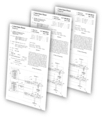
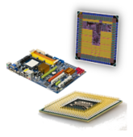

Technology Innovation and Intellectual Property Experts
Intellectual property, expert witness, innovation, and technology consulting services.

Intellectual Property Services
Expert Witness Services
Innovation Services

Technology Consulting
Intellectual Inspiration
Team
Each technical team member has over 20 years of experience in their respective field, including industrial, academic, and litigation experience.
Clients
We serve large and small businesses, law firms, startups, universities, and intellectual-property organizations.
Services
Our services span intellectual property, expert witness work, innovation strategy, prior-art analysis, and advanced technology consulting.
Deep Technology Experience Since 2008
Intellectual Inspiration, formerly Green Semiconductor, Inc., was founded by Dr. Marwan Hassoun in early 2008. The company is involved in technology innovation, technology trends, intellectual-property strategy, education, patent-portfolio evaluation, and corporate profiles.
The team’s expertise spans the deep-submicron integrated-circuit lifecycle, including planning, design, licensing, verification, integration, synthesis, physical design, layout, testing, qualification, fabrication, debug, revisions, and customer support.